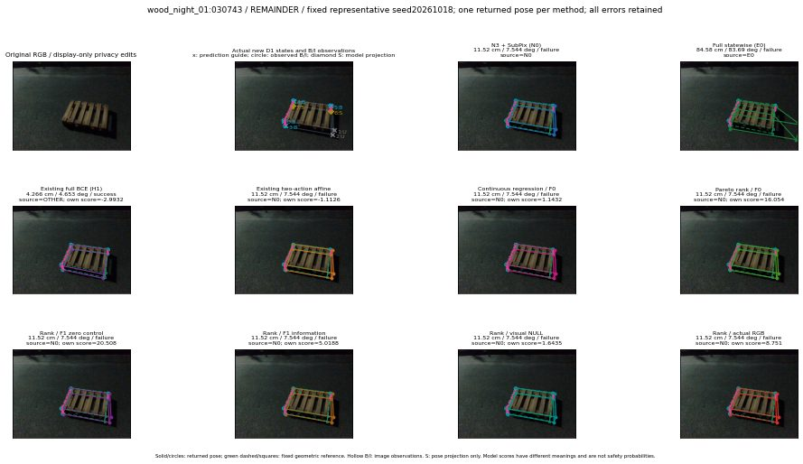

실선은 반환 자세, 초록 점선은 고정 기하 참조입니다. S는 영상 관측이 아닙니다. 점수는 모델별 의미가 다르며 보정된 안전 확률이 아닙니다. 개인정보 처리는 표시 사본에만 적용했습니다.
| 방법·seed | 위치 / 회전 / 공동성공 | 실제 출처 | 선택 후보 | 각 모델 자체 점수 |
|---|---|---|---|---|
| N0 | 11.52 cm / 7.544 deg / failure | N0 | N/A | N/A |
| E0 | 84.58 cm / 83.69 deg / failure | E0 | N/A | N/A |
| E0_REGENERATED | 84.58 cm / 83.69 deg / failure | E0 | E0_REGENERATED | N/A |
| POSEFIX_SUBPIX_PF_ANCHOR | 11.86 cm / 7.635 deg / failure | OTHER | N/A | N/A |
| POSEFIX_SUBPIX_YOLO_ANCHOR | 11.86 cm / 7.635 deg / failure | OTHER | N/A | N/A |
| D1_H1_MLP_s20261018 | 4.266 cm / 4.653 deg / success | OTHER | WD0/ORIGINAL_WD/selected | -2.9932167530059814 |
| D1_H1_MLP_s20261019 | 4.266 cm / 4.653 deg / success | OTHER | WD0/ORIGINAL_WD/selected | -3.046870470046997 |
| D1_H1_MLP_s20261020 | 4.266 cm / 4.653 deg / success | OTHER | WD0/ORIGINAL_WD/selected | -3.777714967727661 |
| D1_H1_PAIR_MLP_s20261018 | 11.52 cm / 7.544 deg / failure | N0 | N0 | -2.1664531230926514 |
| D1_H1_PAIR_MLP_s20261019 | 11.52 cm / 7.544 deg / failure | N0 | N0 | -2.1223857402801514 |
| D1_H1_PAIR_MLP_s20261020 | 11.52 cm / 7.544 deg / failure | N0 | N0 | -2.790475845336914 |
| D1_H1_PAIR_ROLE_AFFINE_s20261018 | 11.52 cm / 7.544 deg / failure | N0 | N0 | -1.1126422882080078 |
| D1_H1_PAIR_ROLE_AFFINE_s20261019 | 11.52 cm / 7.544 deg / failure | N0 | N0 | -1.3387503623962402 |
| D1_H1_PAIR_ROLE_AFFINE_s20261020 | 11.52 cm / 7.544 deg / failure | N0 | N0 | -0.9242860078811646 |
| R_CONT_F0_s20261018 | 11.52 cm / 7.544 deg / failure | N0 | N0 | 1.1432470083236694 |
| R_CONT_F0_s20261019 | 11.52 cm / 7.544 deg / failure | N0 | N0 | 1.313240885734558 |
| R_CONT_F0_s20261020 | 11.52 cm / 7.544 deg / failure | N0 | N0 | 1.2379848957061768 |
| R_ORDER_F0_s20261018 | 11.52 cm / 7.544 deg / failure | N0 | N0 | 16.05396842956543 |
| R_ORDER_F0_s20261019 | 11.52 cm / 7.544 deg / failure | N0 | N0 | 10.934465408325195 |
| R_ORDER_F0_s20261020 | 11.52 cm / 7.544 deg / failure | N0 | N0 | -11.180160522460938 |
| R_ORDER_F1_ZERO_s20261018 | 11.52 cm / 7.544 deg / failure | N0 | N0 | 20.508459091186523 |
| R_ORDER_F1_ZERO_s20261019 | 11.52 cm / 7.544 deg / failure | N0 | N0 | 22.8512020111084 |
| R_ORDER_F1_ZERO_s20261020 | 11.52 cm / 7.544 deg / failure | N0 | N0 | 9.546550750732422 |
| R_ORDER_F1_s20261018 | 11.52 cm / 7.544 deg / failure | N0 | N0 | 5.018795013427734 |
| R_ORDER_F1_s20261019 | 11.52 cm / 7.544 deg / failure | N0 | N0 | 7.374853134155273 |
| R_ORDER_F1_s20261020 | 11.52 cm / 7.544 deg / failure | N0 | N0 | 1.2242497205734253 |
| V_ORDER_NULL_s20261018 | 11.52 cm / 7.544 deg / failure | N0 | N0 | 1.6434741020202637 |
| V_ORDER_NULL_s20261019 | 11.52 cm / 7.544 deg / failure | N0 | N0 | 1.976575255393982 |
| V_ORDER_NULL_s20261020 | 11.52 cm / 7.544 deg / failure | N0 | N0 | 8.294967651367188 |
| V_ORDER_RGB_s20261018 | 11.52 cm / 7.544 deg / failure | N0 | N0 | 8.751041412353516 |
| V_ORDER_RGB_s20261019 | 11.52 cm / 7.544 deg / failure | N0 | N0 | 1.3150733709335327 |
| V_ORDER_RGB_s20261020 | 11.52 cm / 7.544 deg / failure | N0 | N0 | -8.140941619873047 |